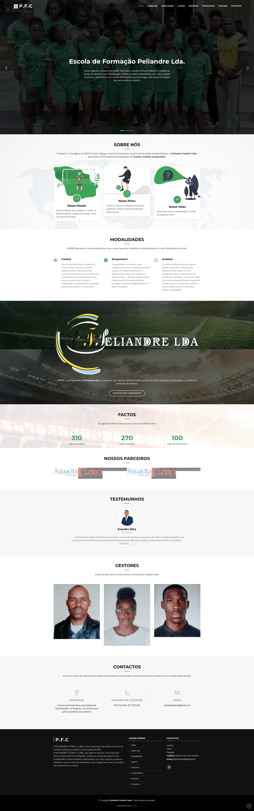

Peliandre FC - Website

Informações do projecto
- Categoria: Web - Front
- Data do projecto: 2021
- Acessar o projeto: Clique aqui!!!
Website desenvolvido para escola de formação desportiva Peliandre FC, cujo objetivo social é a formação dos jovens, através da Escola Peliandre, voltada no campo do desporto nas modalidades: futebol, andebol, basquetebol, com vista a ajudar os jovens a afastarem-se do mundo de deliquência e das drogas, bem como no resgate dos valores éticos e morais.